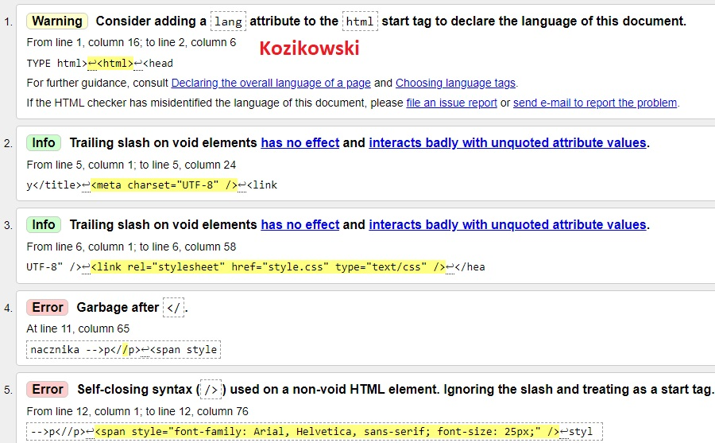
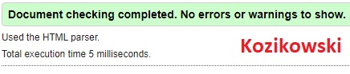

styl wpisany wielkosc 40 pikseli
styl wpisany wieloscia standardowa z uzyciem znacznika -->p
styl wpisany wielkosc 25 pikseli
styl wpisany wieloscia standardowa-->span
Walidacja strony HTML i CSS to proces sprawdzania, czy kod źródłowy strony internetowej spełnia
określone standardy i zasady, określone przez odpowiednie organizacje, takie jak W3C
Strona walidatora
Zrzut przed walidacją z pięcioma błędami

Zrzut po walidacji bez błędów
